💡 La Regola della Buttata: L'umidità del terreno unita a una temperatura stabile nei 10 giorni successivi a una pioggia in luna crescente crea la perfetta "buttata".
Scorzone Estivo
Tuber aestivum Vittad.
Raccolta Aperta
Periodo di raccolta legale: Dal 1 Maggio al 31 Agosto.
Descrizione Peridio e Gleba
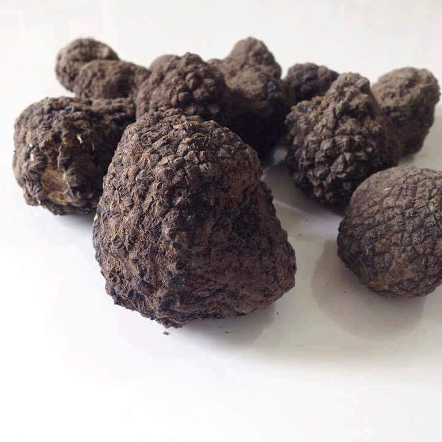
📸 Foto Peridio (Esterno Verrucoso)
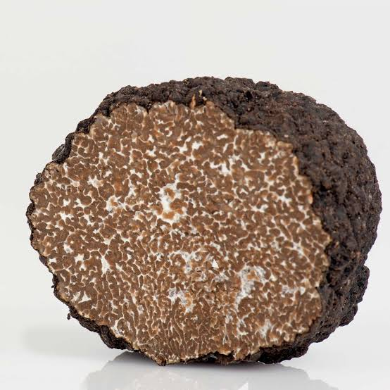
📸 Foto Gleba (Interno Nocciola)
Tipo di Terreno
Predilige suoli spiccatamente calcarei, derivati dal disfacimento di rocce sedimentarie. Tollera molto bene i terreni ricchi di scheletro (sassi e breccia), superficiali, asciutti e ben esposti al sole. Ha un'eccellente tolleranza alla siccità estiva rispetto ad altre specie.
Piante Simbionti Principali
Identifica l'albero e la conformazione della sua foglia per trovare le fungaie.
1. Roverella (Quercus pubescens)
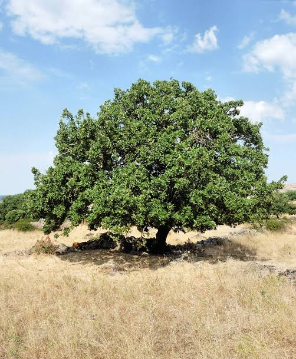
🌳 Foto Albero Intero
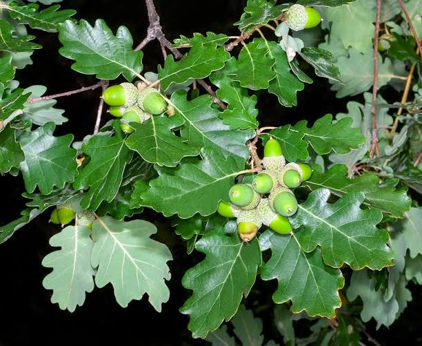
🍃 Dettaglio Foglia
2. Cerro (Quercus cerris)
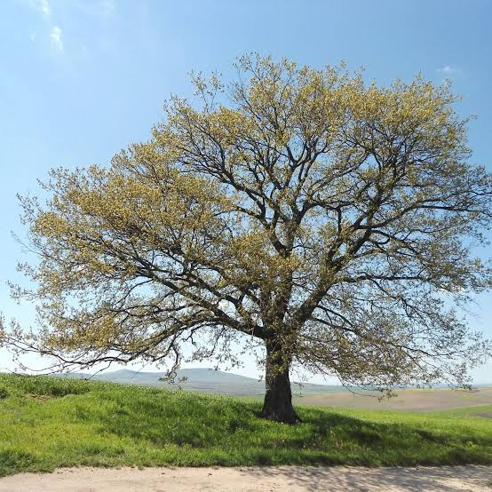
🌳 Foto Albero Intero
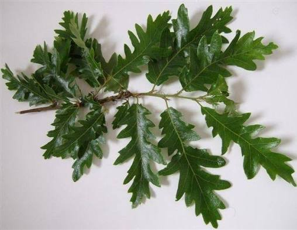
🍃 Dettaglio Foglia
3. Faggio (Fagus sylvatica)
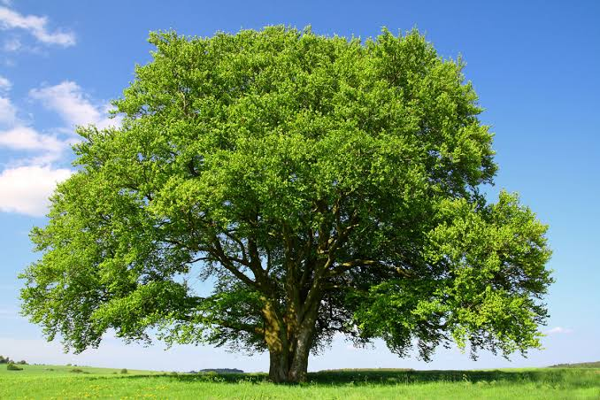
🌳 Foto Albero Intero
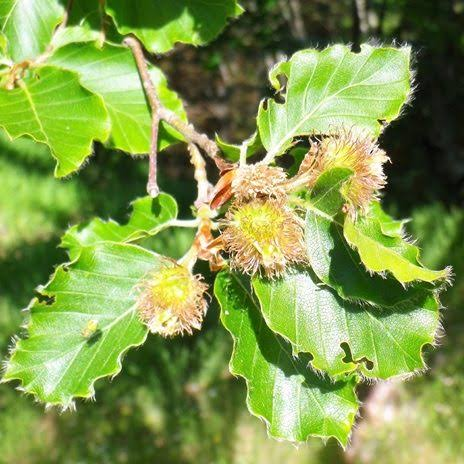
🍃 Dettaglio Foglia
Piante Comari (Indicatori Ambientali)
Arbusti del sottobosco tipici degli areali da Scorzone.
1. Ginepro Comune (Juniperus communis)
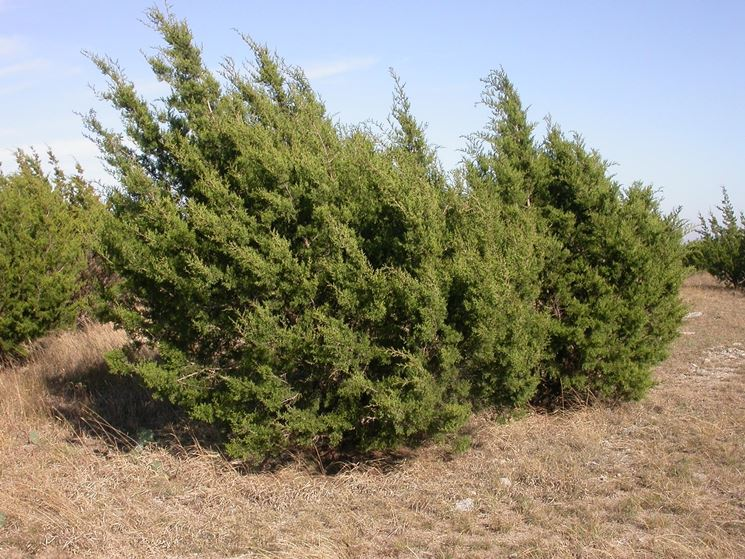
🌿 Foto Arbusto Intero
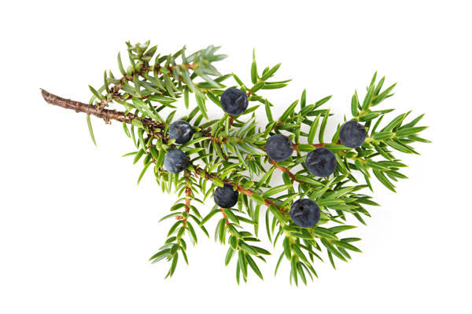
🍃 Dettaglio Aghi / Bacche
2. Cisto (Cistus spp.)
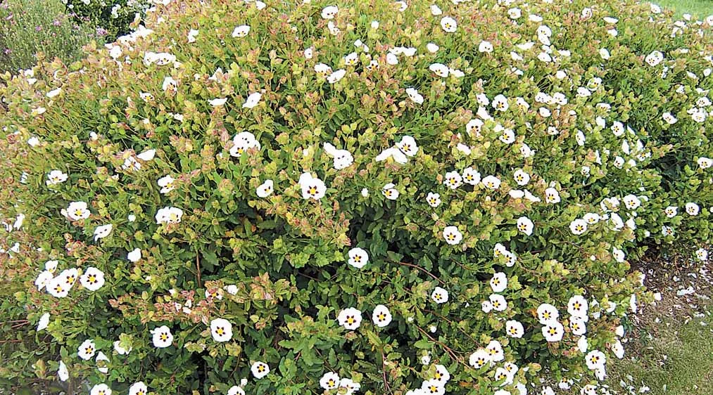
🌿 Foto Arbusto Intero
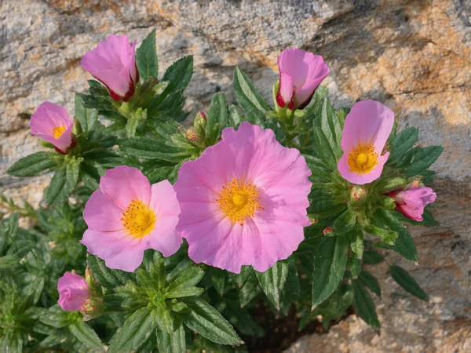
🍃 Dettaglio Foglia / Fiore